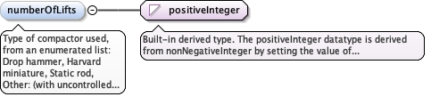

<element minOccurs="0" name="compactorType" type="diggs:ReconstitutedSpecimenCompactorType"><annotation><documentation>Type of compactor used, from an enumerated list: Drop hammer, Harvard miniature, Static rod, Other: (with uncontrolled string following colon).</documentation></annotation></element>
Type of compactor used, from an enumerated list: Drophammer, Harvard miniature, Static rod, Other: (with uncontrolledstring following colon).
Diagram

Type
positiveInteger
Properties
content
simple
minOccurs
0
Source
<element minOccurs="0" name="numberOfLifts" type="positiveInteger"><annotation><documentation>Type of compactor used, from an enumerated list: Drop hammer, Harvard miniature, Static rod, Other: (with uncontrolled string following colon).</documentation></annotation></element>
Water content relative to optimum water content,expressed as decimal (eg. water content at optimum =1)
Diagram
Type
double
Properties
content
simple
minOccurs
0
Source
<element minOccurs="0" name="waterContentRelativeToOptimum" type="double"><annotation><documentation>Water content relative to optimum water content, expressed as decimal (eg. water content at optimum = 1)</documentation></annotation></element>
Complex Type diggs:ReconstitutedSpecimenPreparationInfoType
Namespace
http://diggsml.org/schemas/3
Annotations
Extended type based on AbstractObjectType. Adds elements forreconstituted specimen preparation info type definition.
Database handle for the object. It is of XML type ID, so is constrained to beunique in the XML document within which it occurs. An external identifier for the object inthe form of a URI may be constructed using standard XML and XPointer methods. This is doneby concatenating the URI for the document, a fragment separator, and the value of the idattribute.
<div><h3>lang (as an attribute name)</h3><p>denotes an attribute whose value is a language code for the natural language of the content of any element; its value is inherited. This name is reserved by virtue of its definition in the XML specification.</p></div><div><h4>Notes</h4><p>Attempting to install the relevant ISO 2- and 3-letter codes as the enumerated possible values is probably never going to be a realistic possibility.</p><p>See BCP 47 at<a href="http://www.rfc-editor.org/rfc/bcp/bcp47.txt">http://www.rfc-editor.org/rfc/bcp/bcp47.txt</a>and the IANA language subtag registry at<a href="http://www.iana.org/assignments/language-subtag-registry">http://www.iana.org/assignments/language-subtag-registry</a>for further information.</p><p>The union allows for the 'un-declaration' of xml:lang with the empty string.</p></div>
Source
<complexType name="ReconstitutedSpecimenPreparationInfoType"><annotation><documentation>Extended type based on AbstractObjectType. Adds elements for reconstituted specimen preparation info type definition.</documentation></annotation><complexContent><extension base="diggs:AbstractObjectType"><sequence><element minOccurs="0" name="compactorType" type="diggs:ReconstitutedSpecimenCompactorType"><annotation><documentation>Type of compactor used, from an enumerated list: Drop hammer, Harvard miniature, Static rod, Other: (with uncontrolled string following colon).</documentation></annotation></element><element minOccurs="0" name="numberOfLifts" type="positiveInteger"><annotation><documentation>Type of compactor used, from an enumerated list: Drop hammer, Harvard miniature, Static rod, Other: (with uncontrolled string following colon).</documentation></annotation></element><element minOccurs="0" name="relativeCompaction" type="diggs:VolumePerVolumeMeasureType"><annotation><documentation>The relative compaction property.</documentation></annotation></element><element minOccurs="0" name="waterContentRelativeToOptimum" type="double"><annotation><documentation>Water content relative to optimum water content, expressed as decimal (eg. water content at optimum = 1)</documentation></annotation></element></sequence></extension></complexContent></complexType>